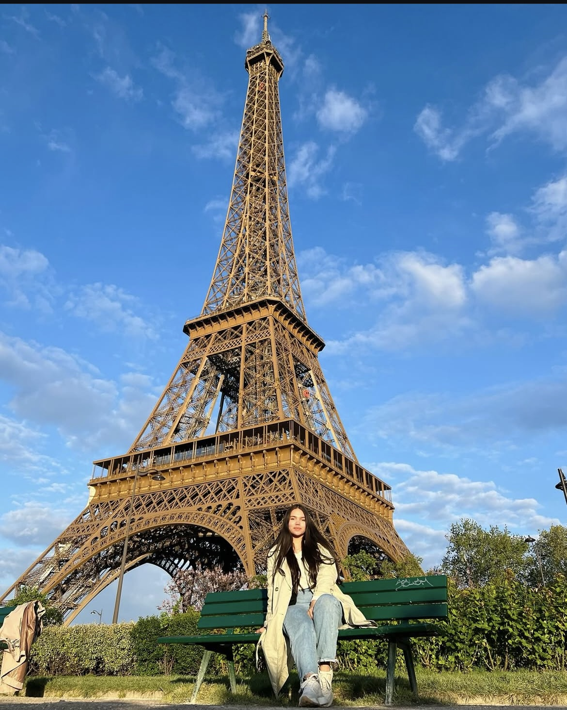
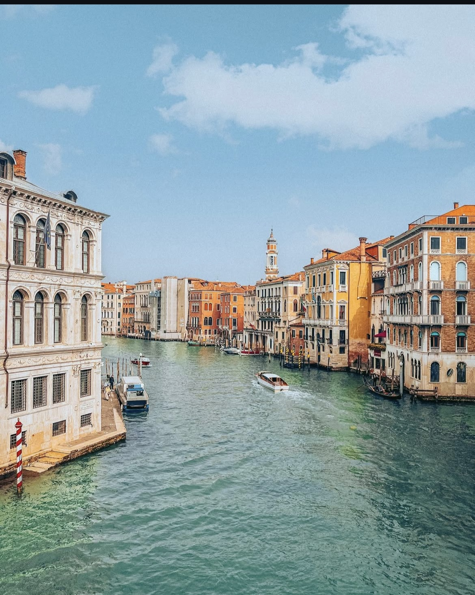
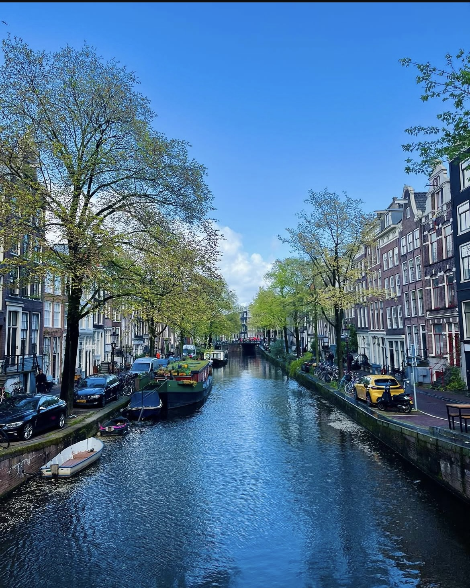
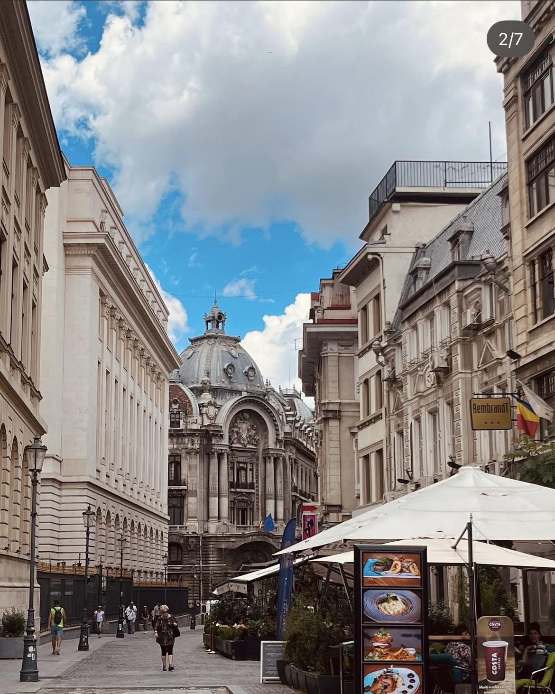

Lugares que me dejaron huella
Cada país que visité me regaló algo diferente. No solo recuerdos, sino sentimientos que todavía llevo conmigo.




“Cada frontera cruzada es una puerta abierta dentro de uno mismo.”